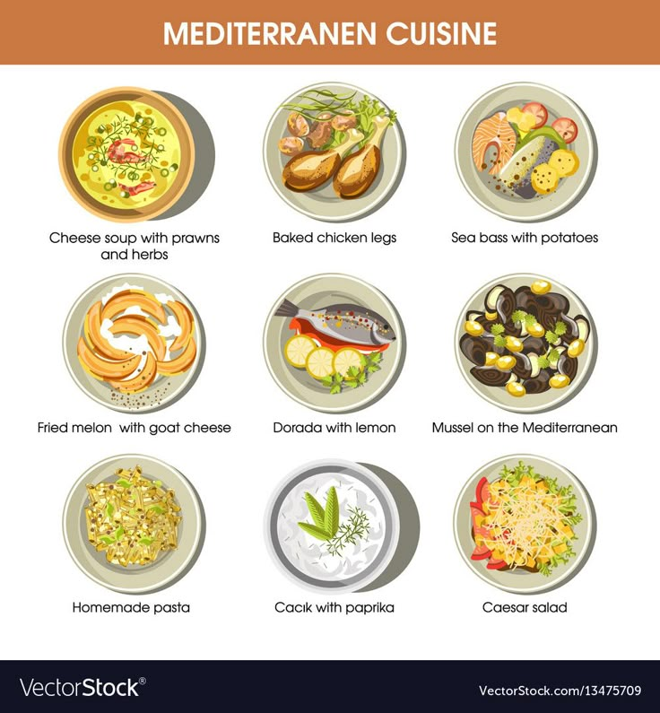
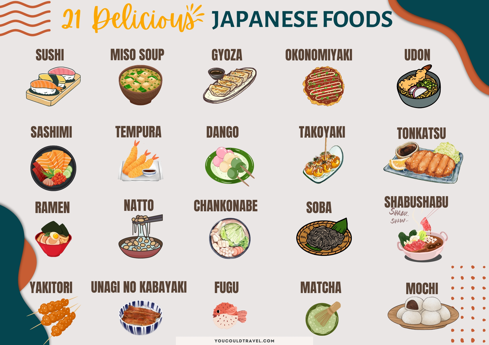

Italian Cuisine

Italian cuisine is a vibrant and diverse Mediterranean cuisine known for its regional variations and iconic dishes like pasta, pizza, and risotto. It emphasizes fresh ingredients, simple cooking techniques, and the use of olive oil, garlic, and herbs.
Indian Cuisine

Indian cuisine is diverse, consisting of many aromatic spices and various cooking methods.
Mexican Cuisine

Mexican cuisine is vibrant, diverse and famous. Chillies, kidney beans, tamales, etc.
Meditterenean Cuisine
Mediterranean cuisine encompases the flavours of all the countries surrounding the Mediternean sea
Key elements include abundant vegetables, fruits, legumes, whole grains, fish, and lean proteins.
Japanese Cuisine
Japanese cuisine has fresh, seasonal ingredients and emphasises simplicity.
It consists of rice and miso Soup. Another popular dish is Sushi.